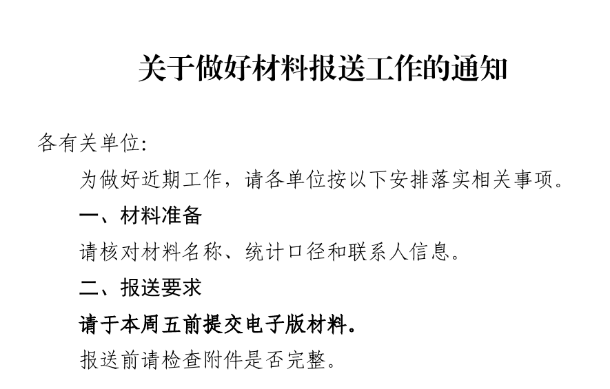

浏览器体验 选一个 DOCX，直接在浏览器排版。文件不会上传，也不需要 API Key。
在线公文排版
支持单份 DOCX（不超过 10 MB）。标题后空一行，正文固定 28 磅，保留原有加粗。
桌面实测 / Mac 0.27.1
同一份公文，排版前后。
选择前后视图，核对标题、行距和加粗。两张图来自同一份合成样例。

下一批材料，用同一套规则。
已发布的离线能力包由本地文件引擎执行，无需调用云端或本地模型。
- 保存流程
- 样本测试
- 发布能力包
- 更换材料离线运行